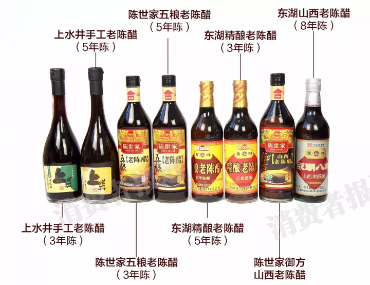
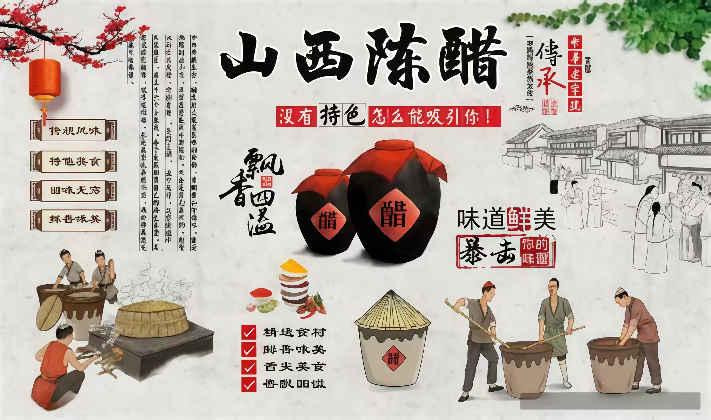

← 返回醇香溯古主页面
1. 按陈酿时间分类（核心分类）

山西陈醋陈酿时间决定品质，国家标准规定“陈醋”需陈酿≥12个月，陈酿越久酸味越柔和、香气越浓郁：
- 一年陈醋：基础款，酸味较直接，适合日常炒菜、腌制，性价比高
- 三年陈醋：中度陈酿，酸味柔和，带淡淡焦香，适合凉拌、蘸食（如饺子）
- 五年陈醋：高端款，酸味醇厚回甘，香气层次丰富，可直接稀释饮用或作礼品
- 八年/十年陈醋：珍藏级，产量少，口感绵柔，兼具食用与收藏价值
2. 按用途分类（场景化分类）
根据使用场景优化配方，满足不同需求：
烹饪型：酸度适中（总酸≥4.5g/100ml），高温烹煮后香气不易挥发，适合炒菜、炖菜
凉拌型：酸度略高（总酸≥5.0g/100ml），口感清爽，带鲜香，适合拌凉菜、调蘸料
保健型：添加红枣、枸杞等食材，保留陈醋营养，适合稀释后每日少量饮用（需遵循说明）
3. 知名品牌分类（选购参考）
山西陈醋主流品牌工艺正宗，品质有保障，选购时可优先选择：
- 宁化府：始于1377年，中华老字号，以“老陈醋”闻名，口感醇厚，主打高端市场
- 东湖：中国驰名商标，规模化生产，产品覆盖全价位，性价比款（一年/三年陈）口碑好
- 水塔：产能大，产品线全，侧重大众消费市场，烹饪型陈醋销量领先
- 紫林：创新型品牌，推出果味陈醋、保健陈醋等，适合年轻消费群体
山西陈醋核心工艺：“熏醅”工艺

区别于其他名醋的关键步骤——将发酵后的酒醅用松木熏烤，形成独特的“焦香”风味，同时让醋色呈深棕红，这也是山西陈醋“香、绵”特质的核心来源，其他名醋无此工艺。